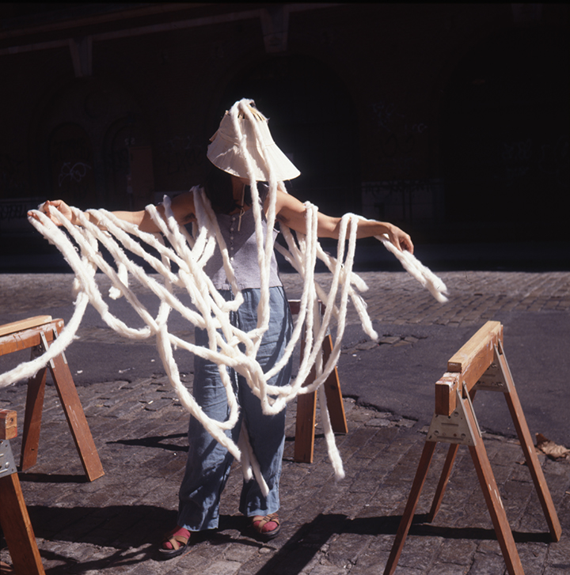

Cecilia Vicuña Lecture
Join us for a lecture by artist Cecilia Vicuña followed by an audience Q & A.
Cecilia Vicuña is a Chilean visual artist, poet, filmmaker, and activist based in New York. She created the autonomous concept of “Precarious Art” in the mid-1960s in Chile to name what disappears. Her poetic work in space, performance, and visual arts is considered a decolonizing vision that anticipates ecofeminism. Vicuña has re-invented the ancient Pre-Columbian quipu system of non-writing with knots through ritual acts that weave the urban landscape, rivers, and oceans, as well as people, to re-construct a sense of unity and awareness of interconnectivity. These works bridge art and poetry as a way of, in Vicuña’s words, “hearing an ancient silence waiting to be heard.”
This event will be live captioned by Communication Access Realtime Translation (CART) services. The auditorium is wheelchair accessible and hearing assisted devices are available. For additional access requests, visit saic.edu/access.
Image Credit: Cecilia Vicuña, Cloud-net, 1998, street performance, New York. Courtesy of the artist. Photo by César Paternosto. © 2025 Cecilia Vicuña